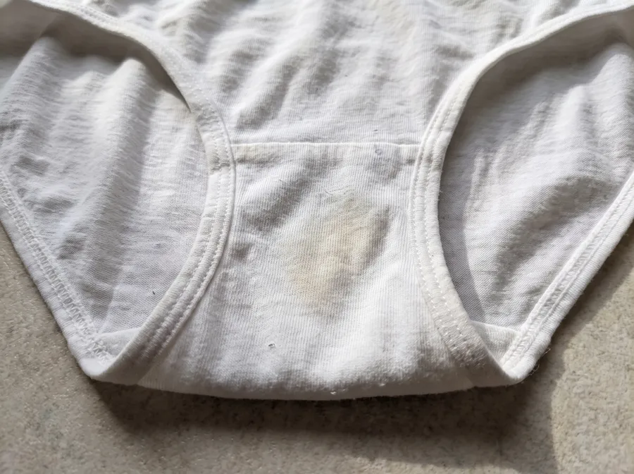
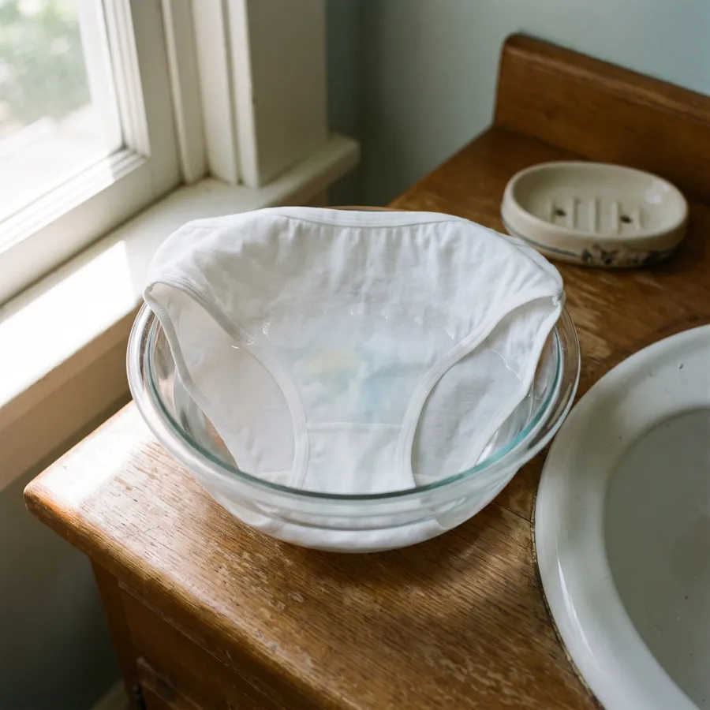
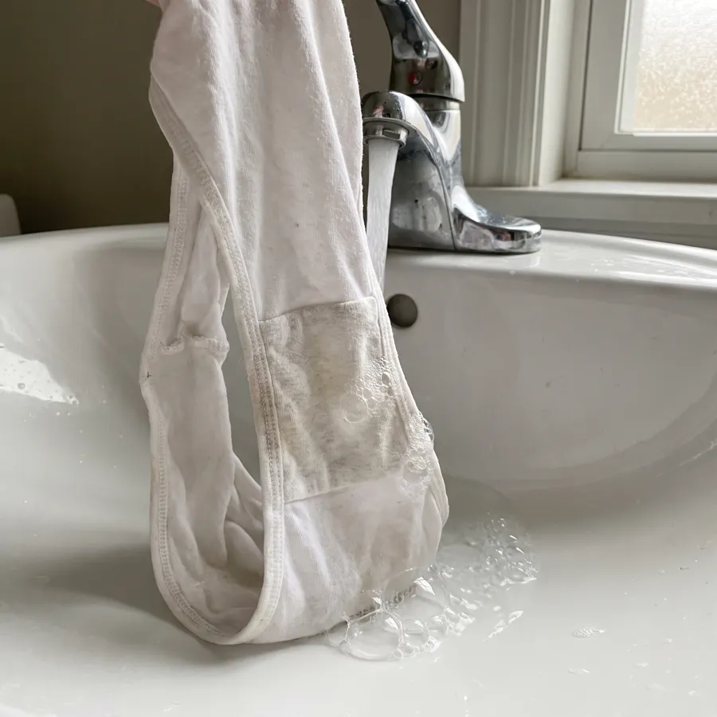
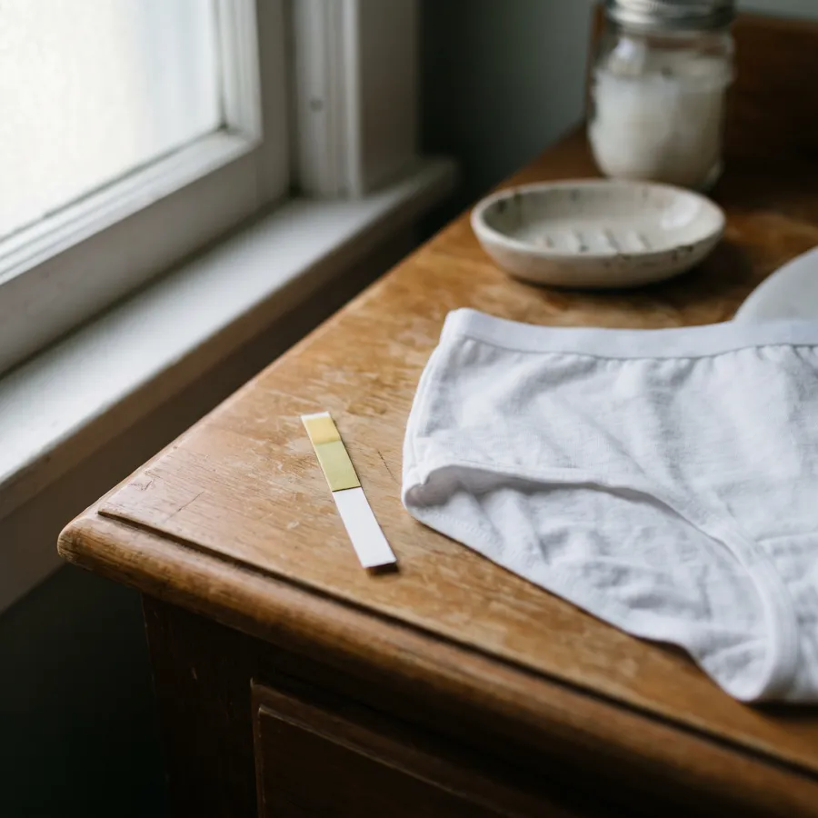

Removes 6 intimate stains in a cold hand wash.
For the stains bar soap leaves behind: discharge, period blood, sweat, body oil, urine and faecal traces. Works on heavy-flow days.
Why bar soap isn't enough.
It looks clean when you hang it up. The next morning, the mark is still there.
Most intimate stains are proteins or body oil. Proteins need enzymes to break down, and bar soap has none, so it relies on scrubbing, which roughs up delicate fabric without lifting the stain. Hot water isn't the answer either, because heat sets protein stains into the fibre.

What the six stains are made ofSix stains, three kinds of chemistry. Undergarment Wash is made to lift all of them in cold water.
How Undergarment Wash works.
Bar soap is made to clean skin. Undergarment Wash is made for what ends up on the fabric, and for the skin that fabric sits against.



What else you get.
Fair questions.
{{f.a}}
The other two.


Be the first to try Undergarment Wash.
Notify meNothing is on sale yet · Privacy · Terms
Product benefits describe what Undergarment Wash is formulated to do, confirmed by independent lab testing before launch.